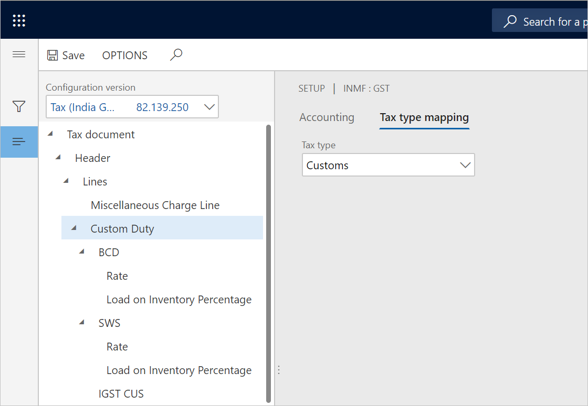
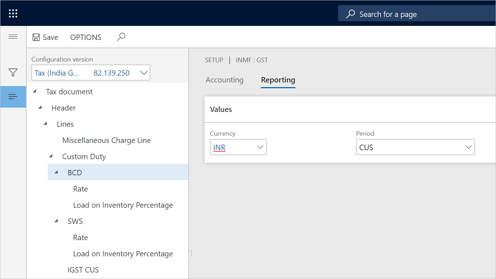
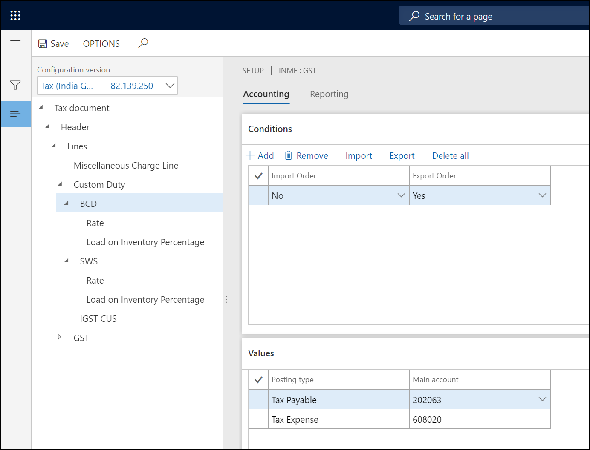
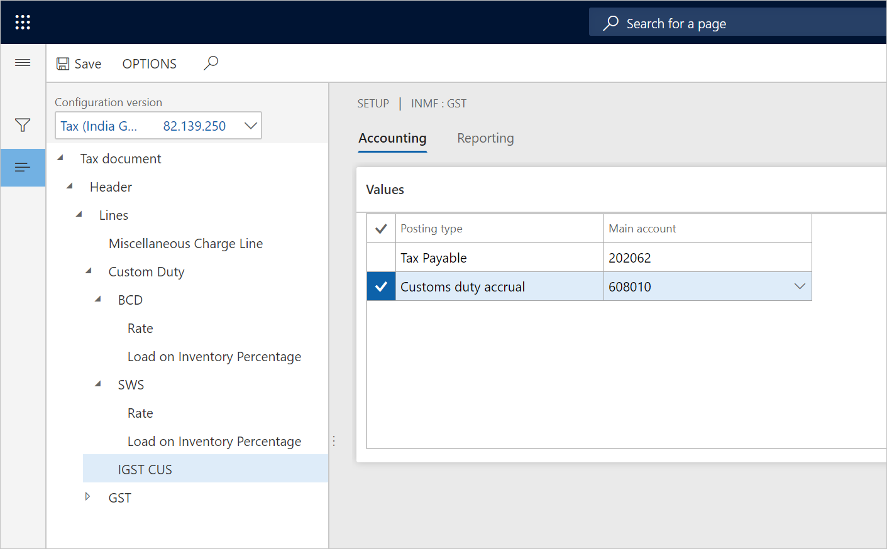
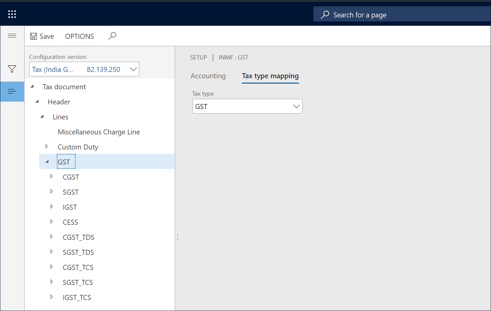
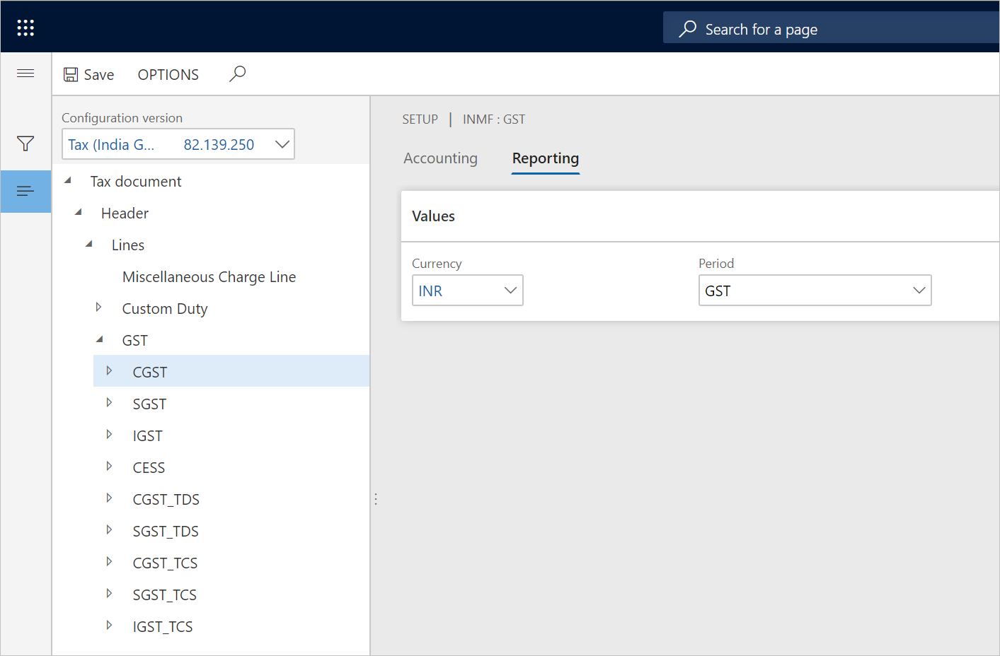
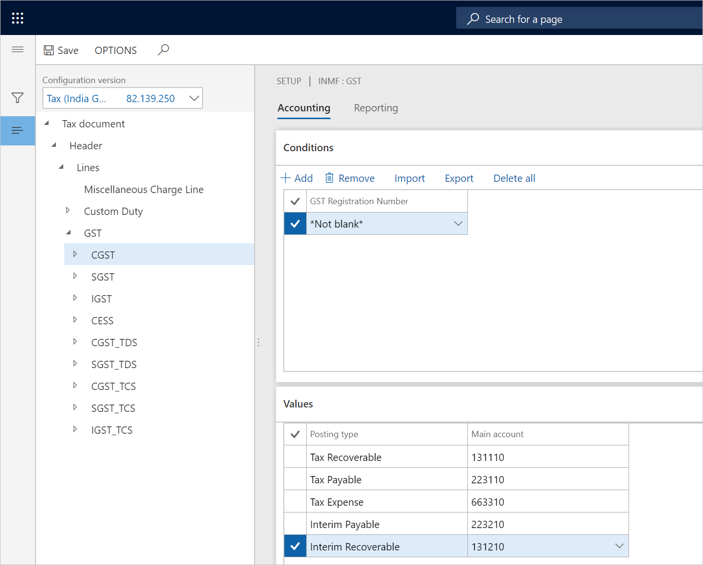

Map configuration tax types - Customs
Customs tax type
Define the tax type mapping
Go to Tax > Setup > Tax Configuration > Tax Setup.
Select a company, and then select Setup.
Select the Customs node.
On the Tax type mapping tab, in the Tax type field, select Customs.

Define the tax period
For each node for the tax component, on the Reporting tab, in the Period field, select a value.

Define main accounts
On the Accounting tab, on the Conditions FastTab, select Add.
In the Import Order field, select a value.
In the Export order field, select a value.
Save the record.
On the Values FastTab, in the Main account field, select a value.
Note
The list of accounts is dynamically generated, based on the posting profile from the configuration. The selected main account should have the Customs posting type.

Select the IGST CUS node.
On the Values FastTab, in the Main account field, select a value.
Note
The main account that you select for Customs duty accrual should be the same account that is selected for the Customs duty accrual account for the GST > IGST node.

GST tax type
Define the tax type mapping
Go to Tax > Setup > Tax Configuration > Tax Setup.
Select a company, and then select Setup.
Select the GST node.
On the Tax type mapping tab, in the Tax type field, select GST.

Define the tax period
For each node for the tax component, on the Reporting tab, in the Period field, select a value.

Define main accounts
On the Accounting tab, on the Conditions FastTab, select Add.
In the GST Registration Number field, select a value.
Save the record.
On the Values FastTab, in the Main account field, select a value.
Note
The list of accounts is dynamically generated, based on the posting profile from the configuration.

Note
Tax main accounts can be defined either at the level of the tax type or the level of the tax component. The value at the tax component level overrides the value at the tax type level. If the field is left blank for a posting type at the tax component level, the corresponding value from the tax type level is used for posting. We recommend that you set up the tax accounts at the tax component level per registration.